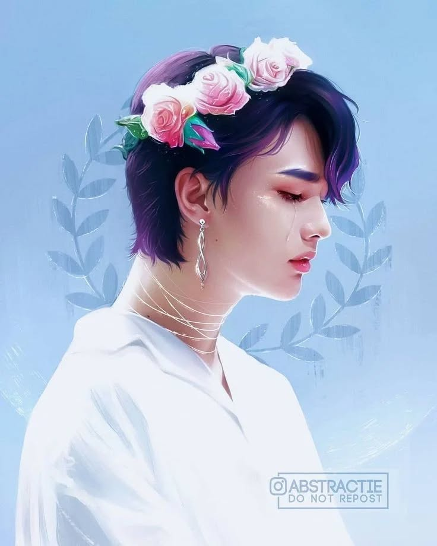
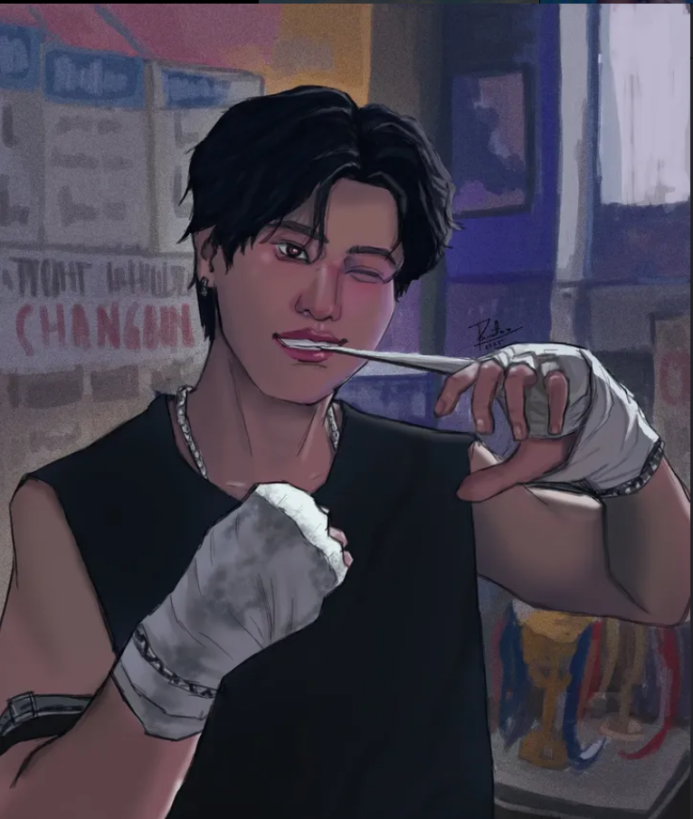
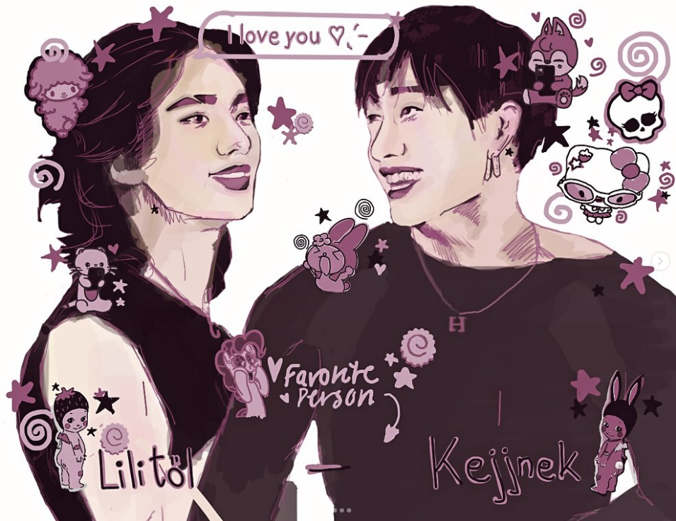
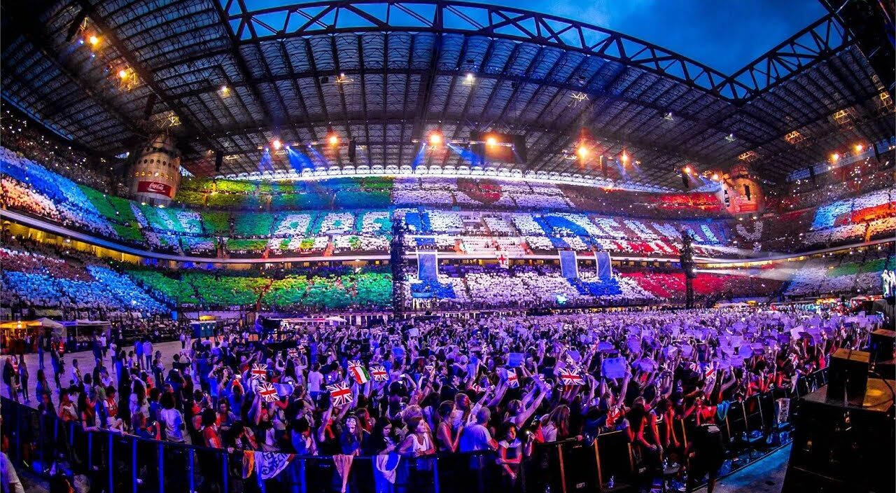
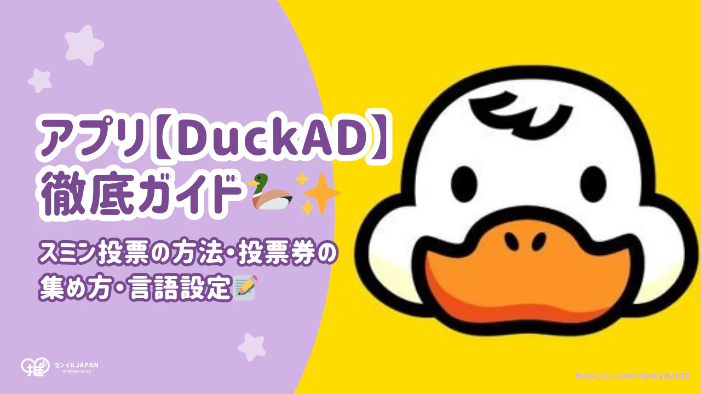

Zona STAY
La comunidad oficial de fans de Stray Kids
Fan Arts Destacados

Fan-Art Hyunjin
Por @stray_kids_fanart_

Edit por el cumpleaños de Changbin
Por @pam._.21

Chibi SKZ
Por @csillaghullok
Eventos de Fans
01
AGO
Aniversario STAY
Celebración del aniversario del fandom con juegos y sorpresas
15
AGO
STAY Meeting Virtual
Reunión mensual de STAYs para organizar proyectos de fans
Proyectos de Fans

Fan Support para Music Bank
Recaudación para enviar regalos y comida al equipo de Stray Kids
75% completado

Votacion Masiva
Proyecto para votar desde multiples cuentas, guia completa
40% completado
Foro STAY
STAY_Argentina
Publicado hace 2 horas
¿Cómo conocieron a Stray Kids?
¡Hola STAYs! Estaba recordando cómo descubrí a SKZ a través de un edit de Felix en TikTok hace 2 años. ¿Cuál fue su primer acercamiento al grupo?